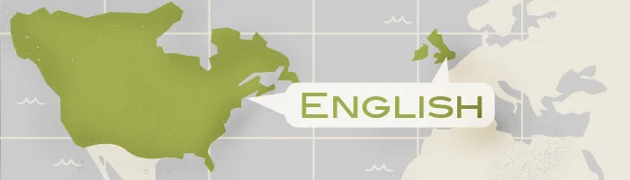
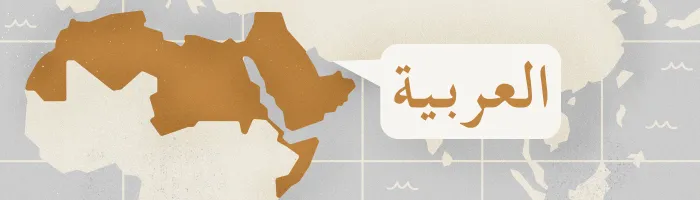
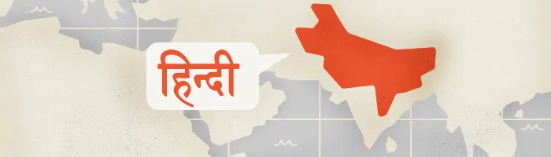

3. English — 373 Million Native Speakers

if you’re reading this article, you may be one of the 370 million-odd
native English speakers,
or one of the billion people who speak it as a second language.
This indicates the remarkable success of English as the lingua franca of
business,
travel and international relations. The relative ease with which English
can be picked up
(especially compared with Chinese) and the pervasive soft power of U.S.
culture means that English
will continue to dominate the world stage for the foreseeable future.
For some, English is still synonymous with opportunity and a better
quality of life.
4. Arabic — 362 Million Native Speakers

Recent numbers put Arabic at around 362 million native speakers.
But this is another instance of numbers not telling the full tale:
Arabic, like Chinese,
is so vastly different in its respective dialects as to be effectively a
number of languages,
grouped as one for the sake of convenience. Modern Standard Arabic is a
primarily written form,
closely related to the Classical Arabic of
the Quran. However, the spoken forms of Arabic in,
say, Oman and Morocco are so different that a couple of philosophy
professors from
these countries might be able to discuss the finer
points of the ancient texts while still struggling to order lunch.
5. Hindi — 344 Million Native Speakers

ndia has 23 official languages, with Hindi/Urdu chief among them.
Whether this is one language — Hindustani —
or two dialects is still fiercely debated. Spoken mainly in northern
India and parts of Pakistan,
Hindi uses devnagri script, while Urdu uses Persian notation. If you
ever travel in the Indian subcontinent,
a little Hindi will get you a long way. Plus, this is the language that
gave us shampoo,
jungle, jodhpurs and bungalow — what’s not to love?